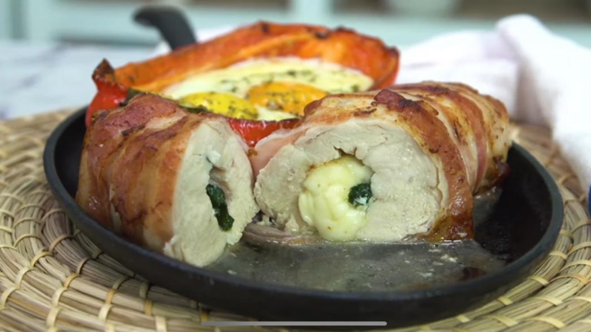

Roll de pollo envuelto en panceta

Ingredientes
- Una pechuga de pollo.
- 150 g de panceta ahumada feteada.
- 100 g de muzzarella.
- Un puñado de espinaca fresca.
Para la guarnición
- 1/2 morrón rojo.
- 50 g de muzzarella.
- 2 huevos.
- Orégano, c/n.
- Perejil, c/n.
Procedimiento
- Cortar la pechuga para milanesa.
- Disponer las fetas de panceta ahumada en fila.
- Por encima colocar la pechuga.
- Salpimentar.
- Colocar en el centro el relleno de muzzarella y la espinaca.
- Envolver con cuidado. Agregarle palitos para que no se desarme.
- Llevar a una sartén bien caliente para dorar por todos sus lados.
- Terminar la cocción en horno a 180° durante 15 minutos.
- Para la guarnición, cortar el morrón a la mitad, retirar las nervaduras.
- Salpimentar y colocarle orégano, por encima queso y, por último, los huevos.
- Llevar al horno hasta que la clara esté cocida.
- Decorar con perejil.